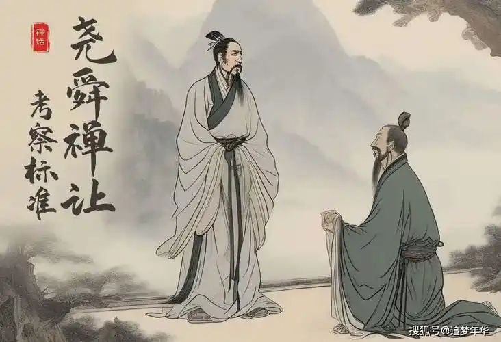
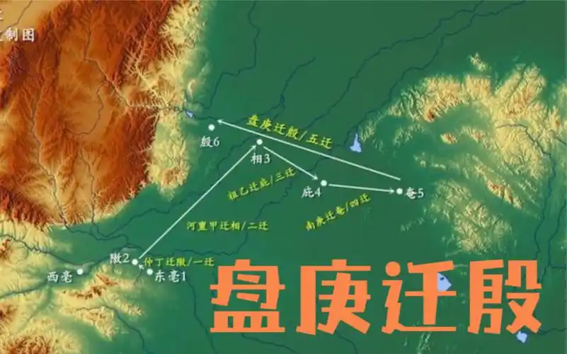
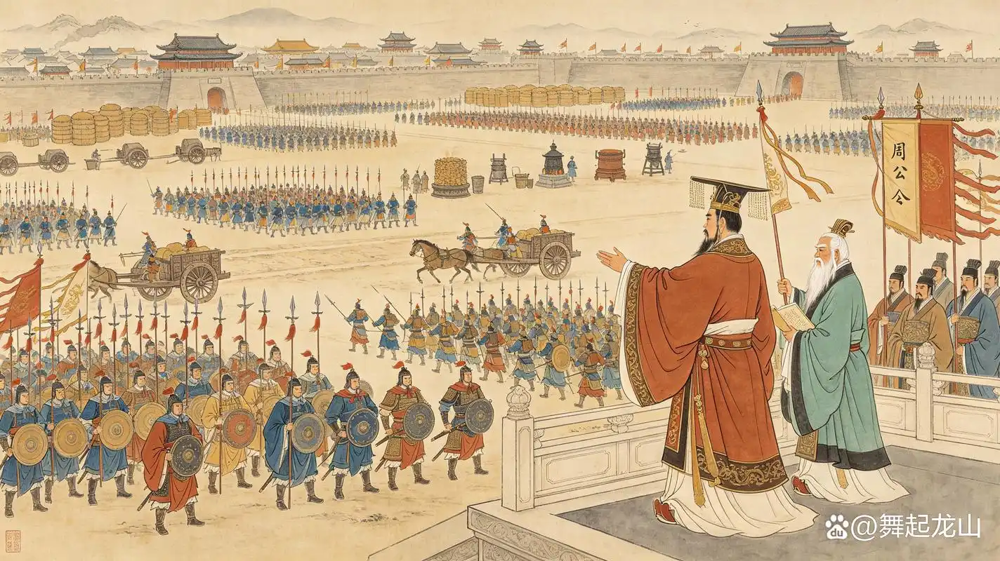
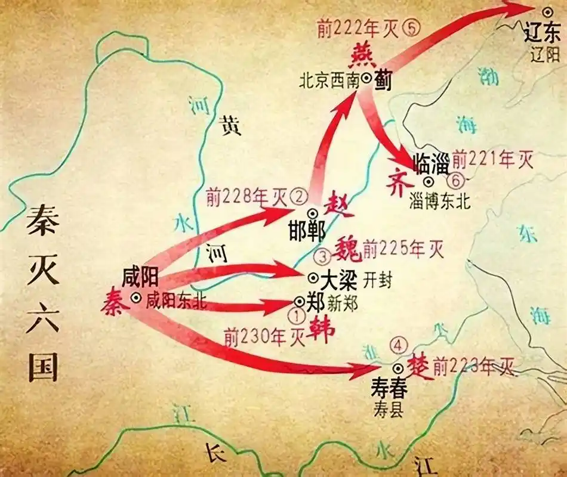
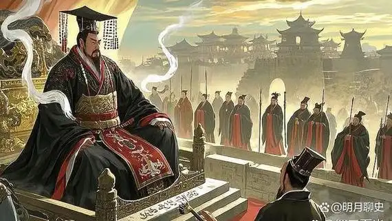
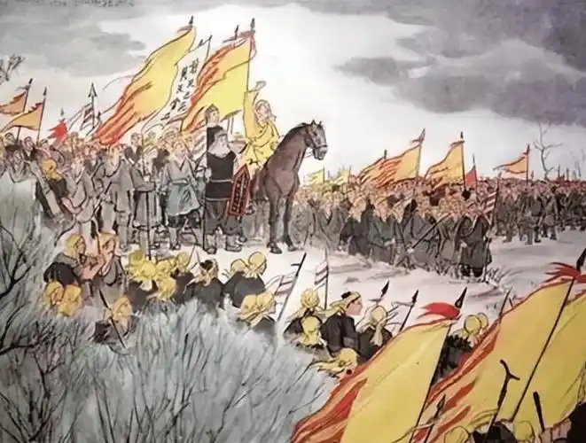

传统史书认为，禹因治水有功而成为部落联盟首领。禹晚年虽曾推举益为继承人，但禹死后，其子启凭借家族势力和个人威望夺取权力，最终继位。启继位标志着“禅让制”向“世袭制”转变，王位不再由推举产生，而是在家族内部代代相传，史称“家天下”。夏朝因此被视为中国历史上第一个世袭制王朝。这一变化并非简单权力交接，而是国家形态逐步形成的重要标志：统治者开始建立军队、刑法、监狱和官僚机构，以维护王权和社会秩序。尽管夏朝历史仍带有传说色彩，但二里头文化等考古发现，为研究夏代文明提供了重要线索。夏朝建立后，中国历史进入王朝时代，对后世政治制度产生了深远影响。
回到目录

商朝建立后，都城曾多次迁徙，内部王位争夺和贵族斗争不断，国力一度受到影响。盘庚继位后，为了摆脱旧贵族势力、缓和社会矛盾，并加强对各地的控制，决定将都城迁到殷，即今河南安阳一带。迁都之初，许多贵族和平民反对，但盘庚坚决推行，最终完成迁徙。迁殷之后，商朝政治中心稳定下来，社会经济得到恢复和发展，王权也得到加强。此后商朝延续了较长时期的繁荣，创造了高度发达的青铜文明。殷墟遗址出土了大量宫殿、王陵、甲骨文和青铜器，成为研究商朝历史最重要的实物资料。盘庚迁殷不仅稳定了商朝统治，也推动了中国早期文明的发展，使商朝成为当时世界上重要的文明古国之一。
回到目录

商朝末年，纣王统治残暴，沉湎酒色，滥用民力，导致内部矛盾尖锐，诸侯纷纷离心。与此同时，渭水流域的周部族在周文王治理下逐渐强大，文王礼贤下士，发展生产，争取诸侯支持，为灭商奠定基础。文王死后，周武王继位，联合庸、蜀、羌、髳等部族，率军东征。约公元前1046年，周军与商军在牧野展开决战。商军虽人数众多，但士气低落，阵前倒戈，纣王自焚而死，商朝灭亡。武王建立周朝，定都镐京，史称西周。西周实行分封制，将宗室、功臣和前代贵族分封各地，以拱卫王室；同时建立礼乐制度，维护等级秩序。武王伐纣是中国古代一次重要的王朝更替，确立了周朝数百年的统治，也深刻影响了后世政治文化。
回到目录

战国时期，秦国通过商鞅变法，奖励耕战，建立中央集权，国力迅速增强。秦王嬴政继位后，制定统一战略，采取远交近攻、各个击破的方针。从前230年灭韩开始，到前221年灭齐为止，秦先后消灭韩、赵、魏、楚、燕、齐六国，结束了长达数百年的诸侯割据局面，建立起中国历史上第一个统一的中央集权王朝。嬴政自称“始皇帝”，推行郡县制，废除分封，将全国分为三十六郡，由中央直接任命官吏。他还统一文字、货币、度量衡，修筑驰道，连接长城，加强了对全国的控制。秦的统一促进了各地区经济文化交流，奠定了中国统一多民族国家的基础。但秦朝赋役繁重、刑罚严酷，也埋下了迅速灭亡的隐患。
回到目录

秦朝灭亡后，项羽和刘邦展开长达四年的楚汉战争。刘邦出身平民，善于用人，能够团结韩信、张良、萧何等人；项羽虽勇猛善战，却刚愎自用，逐渐失去人心。公元前202年，刘邦联合各路诸侯，在垓下包围项羽。项羽兵败突围，最后在乌江自刎。同年，刘邦称帝，建立汉朝，定都长安，史称西汉。西汉初期，刘邦吸取秦朝速亡教训，实行休养生息政策，减轻赋税徭役，恢复农业生产；政治上推行郡国并行制，既设郡县，又分封同姓诸侯王。刘邦还命萧何制定律令，叔孙通制定礼仪，逐步稳定统治。西汉建立结束了秦末以来的战乱，使社会重新走向安定，为后来的“文景之治”和汉武帝盛世奠定了基础。
回到目录

东汉后期，外戚和宦官交替专权，朝政腐败，土地兼并严重，百姓负担沉重，加上自然灾害频繁，社会矛盾日益尖锐。巨鹿人张角创立太平道，以宗教形式组织群众，经过十多年发展，信徒遍布青、徐、幽、冀、荆、扬、兖、豫等州。184年，张角发动起义，起义军头裹黄巾，故称“黄巾起义”。他们提出“苍天已死，黄天当立”的口号，攻打官府，焚烧衙门，声势浩大。东汉朝廷调集军队镇压，同时允许地方州郡和豪强募兵，结果黄巾主力虽被击败，但地方军阀势力迅速膨胀。黄巾起义沉重打击了东汉统治，使中央权威名存实亡，为后来的军阀割据和三国鼎立埋下伏笔。
回到目录
